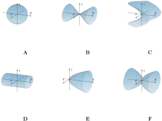

1. Matching Quadric Surfaces.

Match the equations of the surfaces with the graphs A–F shown above by entering a letter from A to F in each blank.
\(y = 2x^2 + z^2\) matches graph .
\(y^2 = x^2 + 2z^2\) matches graph .
\(x^2 + 2z^2 = 1\) matches graph .
\(y = x^2 - z^2\) matches graph .
Answer 1.
\(\text{E}\)
Answer 2.
\(\text{B}\)
Answer 3.
\(\text{D}\)
Answer 4.
\(\text{C}\)
Solution.
We identify each surface by slicing, just as in this section. Here the special axis is the \(y\)-axis, so we slice with the planes \(y = c\text{,}\) \(x = c\text{,}\) and \(z = c\text{.}\)
For \(y = 2x^2 + z^2\text{,}\) the plane \(y = c\) gives \(2x^2 + z^2 = c\text{:}\) no trace for \(c \lt 0\text{,}\) a single point when \(c = 0\text{,}\) and ellipses that grow as \(c\) increases. The planes \(x = c\) and \(z = c\) give the parabolas \(y = z^2 + 2c^2\) and \(y = 2x^2 + c^2\text{,}\) both opening in the positive \(y\) direction. Ellipses on one side only together with parabolas: an elliptical paraboloid opening along the positive \(y\)-axis, graph E.
For \(y^2 = x^2 + 2z^2\text{,}\) the plane \(y = c\) gives \(x^2 + 2z^2 = c^2\text{:}\) an ellipse for every \(c \neq 0\text{,}\) on both sides of the origin, shrinking to a single point when \(c = 0\text{.}\) The plane \(z = 0\) gives \(y^2 = x^2\text{,}\) the two crossing lines \(y = \pm x\text{.}\) Ellipses collapsing to a point, together with crossing lines: an elliptic cone along the \(y\)-axis, graph B.
For \(x^2 + 2z^2 = 1\text{,}\) the variable \(y\) is missing, so the plane \(y = c\) gives the same ellipse \(x^2 + 2z^2 = 1\) for every value of \(c\text{.}\) Identical elliptical slices at every station: a cylinder parallel to the \(y\)-axis, graph D.
For \(y = x^2 - z^2\text{,}\) the plane \(z = c\) gives the parabola \(y = x^2 - c^2\) opening in the positive \(y\) direction, while the plane \(x = c\) gives the parabola \(y = c^2 - z^2\) opening in the negative \(y\) direction, and the plane \(y = 0\) gives the crossing lines \(z = \pm x\text{.}\) Parabolas opening in opposite directions: a hyperbolic paraboloid, a saddle, graph C.
Graphs A and F match none of the equations. Slicing the ellipsoid in A gives bounded ellipses in every direction, which none of the equations produce. Slicing the two bowls in F with planes \(y = c\) gives ellipses whose size grows like \(\sqrt{|c|}\text{,}\) unlike the straight-sided linear growth of the cone in B.